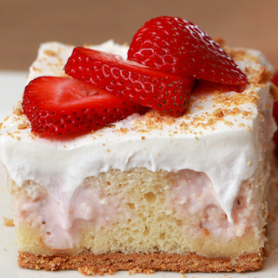

Strawberry Tres Leches Cake
Description
A perfectly moist, sweet, fluffy cake that's perfect for a picnic at the park.

Ingredients
- 6 graham crackers, whole
- 1/2 box vanilla cake mix, prepared according to package
- 1 lb strawberry, with tops removed
- 8 oz cream cheese, softened (1 block)
- 14 oz sweetened condensed milk (1 can)
- 1 cup milk
- 8 oz whipped topping
- strawberry, for garnish
Directions
- Preheat oven to 350 degrees F.
- Spray a 9x9-inch baking pan with cooking spray.
- Take 5 of the graham crackers and arrange them in the pan, breaking some of them to fill in the gaps.
- Crush the remaining graham crackers and set aside.
- Pour the vanilla cake batter on the graham cracker base.
- Bake for 25-30 minutes until an inserted toothpick comes out clean.
- Using the back of a wooden spoon, poke 16 holes in the cake (4x4)
- Blend the strawberries in a blender until you're left with a fine mush.
- Add the softened cream cheese and condensed milk. Whisk until no large lumps remain.
- Add the milk, stirring until smooth
- Pour the mixture over the cake and set until the cake has absorbed as much of the mixture as it can. Some
of the mixture will stay on top, which is okay.
- Spread the whipped topping evenly on top.
- Chill the cake anywhere from 3 hours to overnight.
- Slice, and serve with strawberries and the reserved graham cracker crumbs.
Notes
- Make sure the cream cheese is at room temperature. Large lumps will remain in the strawberry
mixture if the cream cheese is too cold.
- Consider doubling the recipe to use the entire box of vanilla cake mix. Double the cake,
double the fun!
Links
Home